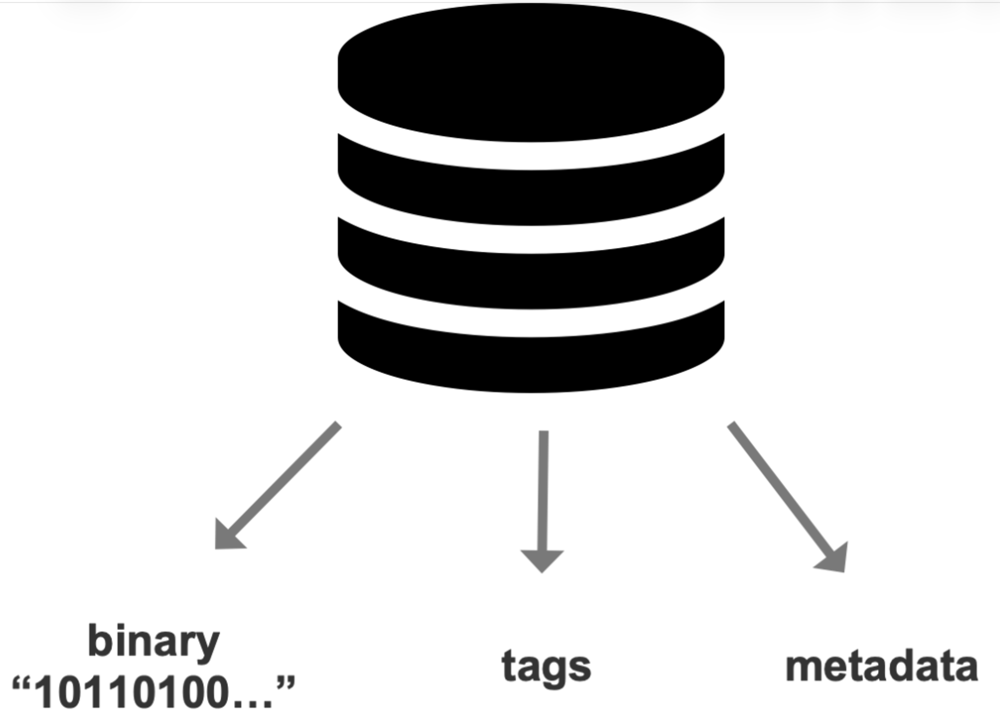
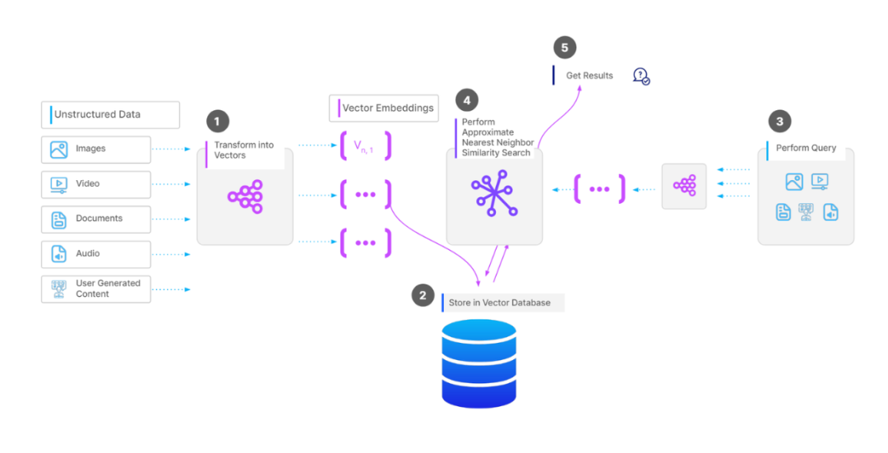

传统关系型数据库如何保存非结构化数据
想象一下，我们有一张关于「日出」的图片，如下所示，应该如何保存在传统的关系型数据库中？

图1: 非结构化数据-图片
我们可以将图片转化成二进制数据，保存在数据库中的某个字段。毫无疑问，当我们想要查找这张图片时，单纯通过二进制数据进行搜索，存在明显的缺陷：
- 检索低效性：直接通过二进制数据查询需要逐条比对，计算复杂度为 O(N * M)（N、M 分别代表数据总条数和数据大小），在海量数据下难以实现高效检索。
- 语义缺失：二进制数据本身不包含语义信息，无法通过内容关联性进行搜索，例如无法直接回答「哪张图片包含海上的日出？」。
为解决这些问题，通常需依赖元数据和标签，把这些数据同时保存在数据库中：

图2: 元数据和标签保存在数据库中
- 元数据：记录图片的基本属性（例如创建时间、图片大小），但元数据通常缺乏上下文信息，无法描述内容细节。
- 标签：通过人工或自动化标注（例如图像分类算法）添加语义标签（例如「日出」、「沙滩」），但标签可能存在主观性、覆盖不全或歧义等问题。
举一个经常被引用到的例子：假如要查询「苹果」，如何能够准确区分是「水果」苹果，还是「手机」苹果？
图3: 水果 vs 手机
以上问题不仅仅针对图片这一类型的数据，对于非结构化数据，均存在上述问题。
embedding：跨越语义与数据之间的鸿沟
向量 vs embedding
- 向量（vector）：在数学中，向量指的是既有「大小」又有「方向」的量
- embedding：将文本、图片、视频等非结构化数据中的语义（semantic）和上下文（contextual）信息进行编码并表示为向量
通俗来讲，可以理解为：向量是一种数据的数学表示方式，embedding是通过机器学习模型（例如深度神经网络）等方式将非结构化数据转换为高维空间中的向量，每个维度隐含数据的某种抽象特征。
将非结构化数据转换为向量，目的是借助向量相关的算法（例如余弦相似度）来评估非结构化数据之间的相似性，以便实现高效搜索。
向量如何生成的
对于不同模态的数据，embedding模型也可能不一样，这里简单描述一下：
- 文本：使用 Transformer 模型（例如 BERT、GPT）生成词向量或句子向量，通过自注意力机制捕捉上下文关系。例如，"苹果"在"苹果派"中与"水果"语义关联，而在"苹果发布会"中关联"科技公司"。
- 图像：通过卷积神经网络（CNN）提取特征，例如 ResNet50 将图像编码为 2048 维向量，每个维度可能对应边缘、纹理或物体部件的特征。
- 音频：使用声谱图输入到 WaveNet 或 BERT-like 模型，生成表征音调、节奏的向量。
向量数据库
顾名思义，向量数据库就是专门用来存储、搜索、管理向量的数据库。
- 支持向量的增删改查
- 管理大规模向量
- 除了向量数据本身，向量数据库还会存储（与向量有关的）元数据。特别的，与大模型结合起来，支持多模数据的搜索，例如文搜图、图搜文等。
一些题外话：现实世界中会存在大量的向量吗？
当然。举个例子，假设每个人的身份证图片对应一个embedding向量（每个向量1024维），全国大概有14亿人，那么，就有14亿个向量，这是一个非常庞大的数据，如何在这14亿个向量中实现高效搜索，是一个极具挑战的事情。
与传统关系型数据库对比
架构
用于生产的向量数据库通常包含以下四个主要架构层：
- 存储层：管理向量数据和元数据的持久化存储
- 索引层：维护多种索引算法，管理索引的创建、修改和删除
- 查询层：处理查询、决定执行策略
- 服务层：管理客户端的连接、处理请求的路由、提供监控、日志、安全和多租户等功能
工作流程如下所示：

图4: 向量数据库工作流程
- ML 模型将非结构化数据转换为向量
- 将向量与其相关的元数据存储在数据库中
- 当用户执行查询时，系统会使用相同的模型将其转换为向量
- 数据库使用 ANN（近似最近邻）算法将查询向量与存储的向量进行比较
- 根据向量相似度返回前 K 个最相关的结果
- 【可选】post-processing：应用额外的 filter 或 rerank
应用场景
- 自然语言处理：在自然语言处理 (NLP) 领域，可用于文本分类、情感分析和语言翻译等任务。通过将文本转换为高维向量，向量数据库可以实现高效的相似性搜索和语义理解，从而提升 NLP 模型的性能。
- 计算机视觉：在自动驾驶、医学成像和数字资产管理等领域，可用于图像识别、目标检测和图像分割等任务，能够快速准确地检索视觉上相似的图像。
- 基因组学：在基因组学中，向量数据库用于存储和分析基因序列、蛋白质结构和其他分子数据。研究人员可通过向量搜索来查找具有相似模式的基因序列，从而有助于发现遗传标记并理解复杂的生物过程。
- 推荐系统：通过将用户交互和商品特征转化为向量，可以快速识别与用户之前交互过的相似的商品，以提高推荐的准确性和相关性，从而提升用户满意度和参与度。
- 聊天机器人和虚拟助手：用于聊天机器人和虚拟助手，为用户查询提供带上下文信息的实时的回复。通过将用户输入转换为向量，这些系统可以执行相似性搜索，以找到最相关的结果，使得聊天机器人和虚拟助手能够提供更准确、更符合上下文的答案，从而提升整体用户体验。
- ...
小结
本文主要介绍了embedding和向量数据库，通过embedding技术，将非结构化数据的语义和上下文信息编码为向量，填补了传统关系型数据库在语义和上下文理解上的空白。